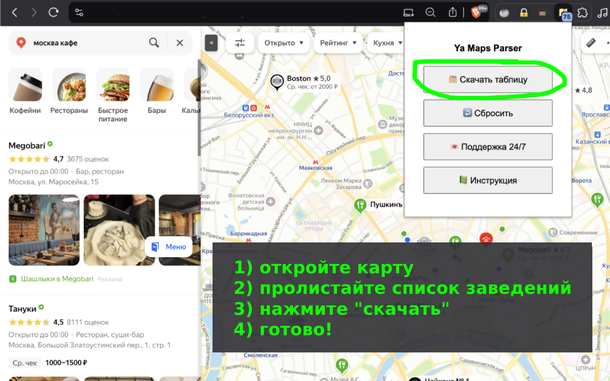
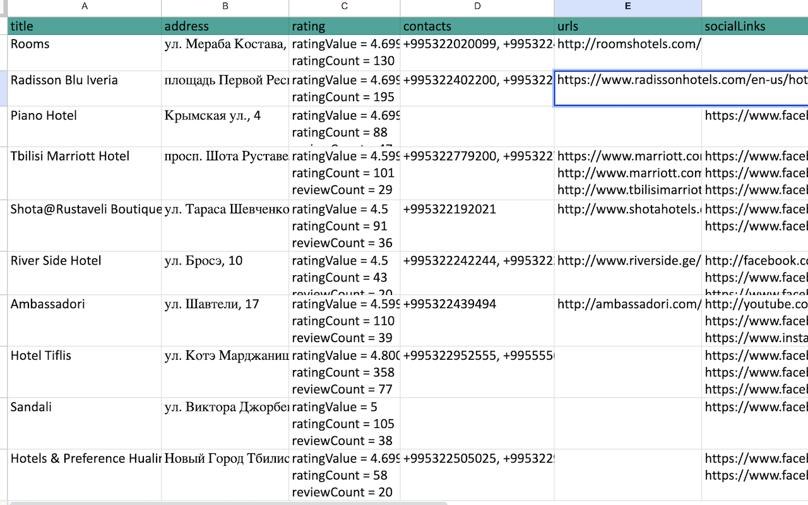

Парсер Яндекс Карт
в Excel за один клик
Ya Maps Parser парсит с Яндекс Карт телефоны, сайты, соцсети, адреса, координаты, рейтинги и отзывы организаций — всё автоматически выгружается в XLSX. Без капчи и копипаста.
- Кофемания★ 4.7
- Surf Coffee★ 4.8
- Double B★ 4.6
- Кооператив Чёрный★ 4.9
- Cup&Cake★ 4.5
| NAME | PHONE | SITE |
|---|---|---|
| Кофемания | +7 495 | kofe.ru |
| Surf | +7 499 | surf.co |
| Double B | +7 495 | db.coffee |
Всё, что есть в карточке — у вас в таблице.
Один проход списка — и десятки полей по каждой организации уже у вас.
Телефоны и WhatsApp
Все номера из карточки организации, готовые для обзвона и рассылок.
Сайты и соцсети
Веб-сайт, Instagram, Telegram, ВК — всё, что указано на карте.
Адреса и координаты
Полный адрес и точные lat/lon для гео-аналитики и логистики.
Рейтинги и отзывы
Оценка и количество отзывов — сразу видно качество базы.
Выгрузка в XLSX
Открывается в Excel, Google Sheets, Numbers — никакой возни с CSV.
Без капчи и лимитов
Ya Maps Scraper работает прямо в браузере. Без прокси и блокировок.
От установки до базы — меньше минуты.
Установите расширение
Один клик в Chrome Web Store. Никакой регистрации.
Откройте Яндекс Карты
Введите запрос: «стоматологии Казань», «барбершопы Питер».
Прокрутите список
Парсер Яндекс Карт автоматически собирает данные по мере прокрутки.
Нажмите «Скачать XLSX»
Готовая таблица с контактами — на вашем компьютере.
Посмотрите, как работает Yandex Maps Scraper.
Полная демонстрация парсинга Яндекс Карт: от установки расширения до готовой таблицы Excel.
Четыре шага — и база готова.
- 1Откройте Яндекс Карты с нужным запросом
- 2Пролистайте список заведений — парсер Яндекс Карт собирает их в фоне
- 3Нажмите «Скачать таблицу» в попапе расширения
- 4Готово — XLSX с контактами скачан


Вот так выглядит выгрузка в Excel.
Скриншот реальной таблицы из Ya Maps Parser: название, адрес, рейтинг, контакты, сайты и соцсети — всё в одном XLSX.
- ●Открывается в Excel, Google Sheets и Numbers
- ●Поля разделены — можно фильтровать и сортировать
- ●Готово к импорту в amoCRM, Bitrix, Notion, Airtable
Начните бесплатно. Платите, когда вырастете.
Демо-доступ — навсегда. Платные тарифы открывают большие лимиты по строкам на одну таблицу. Количество таблиц не ограничено ни в одном тарифе.
Попробуйте, как работает парсер Яндекс Карт.
- ✓До 30 строк в таблице за раз
- ✓Безлимит таблиц
- ✓Все поля карточки
- ✓Выгрузка в XLSX
Идеально для одного проекта.
- ✓До 200 строк в таблице за раз
- ✓Безлимит таблиц
- ✓Все возможности парсинга
- ✓Поддержка
Большие базы каждый день.
- ✓До 5000 строк в таблице за раз
- ✓Безлимит таблиц
- ✓Приоритетная поддержка
- ✓Обновления и новые поля
Для агентств и продаж.
- ✓До 10 000 строк в таблице за раз
- ✓Безлимит таблиц
- ✓Приоритетная поддержка
- ✓Все обновления включены
Отвечаем в среднем за 3 часа.
Напишите в поддержку — поможем с установкой, тарифами и нестандартными задачами по сбору данных.
Страница поддержки открывается в браузере, VPN не нужен.
Частые вопросы.
Не нашли ответ? Напишите в поддержку.
Готовы попробовать?
Поставьте Ya Maps Parser за 30 секунд.
Демо-доступ работает сразу. Если понравится — откроете расширенные лимиты в один клик.
Установить из Chrome Store →